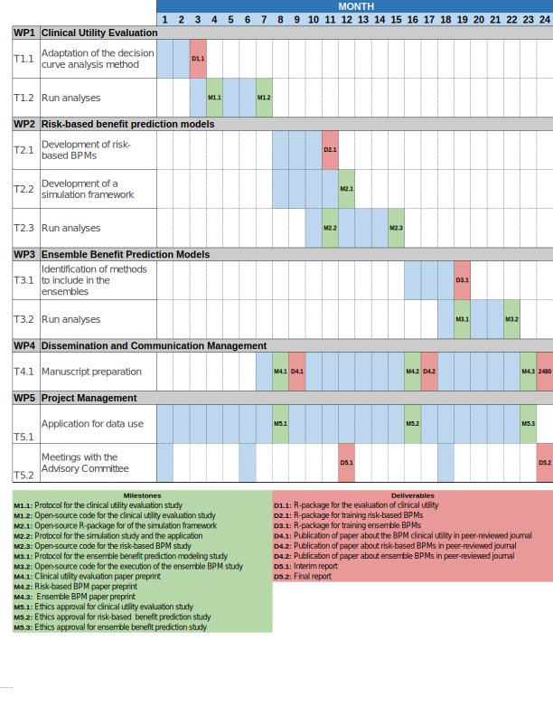

Μεθοδολογία Εκπαιδευτικής Έρευνας (0110Υ)
Χειμερινό εξάμηνο 2025-2026
2025-11-13
Υπενθύμιση
Ερευνητικό πλάνο
Γενικά
Ορισμός
Το ερευνητικό πλάνο είναι η λεπτομερής περιγραφή της μελέτης που πρόκειται να πραγματοποιηθεί.
Χρησιμότητα
Το ερευνητικό πλάνο εξυπηρετεί πολλούς σημαντικούς σκοπούς:
- Αναστοχασμός κάθε πλευράς της μελέτης.
- Διευκόλυνση της αξιολόγησης της μελέτης από τον ερευνητή και από άλλους.
- Καθοδήγηση της μελέτης.
Χαρακτηριστικά καλού πλάνου
Ένα καλά μελετημένο πλάνο:
- Περιγράφει λεπτομερώς τα μέσα συλλογής της πληροφορίας.
- Υποστηρίζει τις ικανότητες της ερευνητικής ομάδας να πραγματοποιήσει τη μελέτη.
- Περιγράφει επαρκώς το αντικείμενο του προβλήματος που θα μελετηθεί.
- Αναγνωρίζει πιθανά προβλήματα που θα προκύψουν και προτείνει μέτρα αντιμετώπισής τους.
- Είναι ξεκάθαρο για τα χρονικά πλαίσια εκτέλεσης της μελέτης.
Ποσοτική έρευνα
Περιεχόμενα ερευνητικού πλάνου
Συνήθως, ένα ερευνητικό πλάνο περιλαμβάνει τα εξής μέρη:
- Εισαγωγή
- Μέθοδος
- Ανάλυση δεδομένων
- Χρονοδιάγραμμα
- Προϋπολογισμός
Εισαγωγή
Η ενότητα της εισαγωγής συνήθως περιλαμβάνει:
- Δήλωση θέματος:
Περιγραφή υποβάθρου και αιτιολόγηση σημαντικότητας. - Δήλωση ερευνητικών ερωτημάτων:
Εστίαση της μελέτης και οδηγός της συλλογής δεδομένων.
Εισαγωγή
- Ανασκόπηση σχετικής βιβλιογραφίας:
Αναφορές για το τι είναι γνωστό για το θέμα και ανάδειξη εύλογης υπόθεσης. - Δήλωση ερευνητικής υπόθεσης:
Δικαιολόγηση των ερευνητικών υποθέσεων.
Μέθοδος
Η ενότητα της μεθόδου συνήθως περιγράφει:
- Τους συμμετέχοντες στη μελέτη.
- Τα όργανα μέτρησης που θα χρησιμοποιηθούν.
- Το σχεδιασμό της μελέτης.
- Τη διαδικασία πραγματοποίησης της μελέτης.
Μέθοδος: Συμμετέχοντες
Η περιγραφή των συμμετεχόντων πρέπει να ορίζει:
- Τον αριθμό των συμμετεχόντων στη μελέτη.
- Τα χαρακτηριστικά των συμμετεχόντων.
- Τον πληθυσμό από τον οποίο θα επιλεγεί το δείγμα των συμμετεχόντων.
Μέθοδος: Όργανα
Όργανο είναι ένα τεστ ή εργαλείο που θα χρησιμοποιηθεί για τη συλλογή των δεδομένων.
Στην περίπτωση χρήσης υφιστάμενων οργάνων, η περιγραφή τους πρέπει να τεκμηριώνει:
- την καταλληλότητας της χρήσης τους
- την εγκυρότητά τους
- την αξιοπιστία τους
Μέθοδος: Όργανα
Στην περίπτωση κατασκευής οργάνων για την πραγματοποίηση της μελέτης, πρέπει:
- Να περιγραφεί ο τρόπος κατασκευής του οργάνου.
- Να εξηγηθεί ποια ποσότητα θα μετράει.
- Να περιγραφεί επαρκώς ο τρόπος αξιολόγησης του οργάνου (εγκυρότητα-αξιοπιστία).
Μέθοδος: Σχεδιασμός
Ο σχεδιασμός περιγράφει τη γενική δομή της μελέτης.
Οι βασικοί ερευνητικοί σχεδιασμοί στην ποσοτική έρευνα είναι:
- Έρευνα ερωτηματολογίου
- Έρευνα συσχέτισης
- Αιτιώδης-συγκριτική έρευνα
- Πειραματική έρευνα
- Έρευνα με ένα υποκείμενο
Μέθοδος: Διαδικασία
Η διαδικασία περιγράφει τα βήματα της συλλογής δεδομένων, από την αρχή μέχρι το τέλος:
- Περιγραφή της τεχνικής για τη συλλογή του δείγματος.
- Περιγραφή όλων των μετρήσεων που θα πραγματοποιηθούν.
- Περιγραφή των βημάτων για την πραγματοποίηση όλων των κύριων στοιχείων της μελέτης (διασφάλιση πρόσβασης στο χώρο της μελέτης, συλλογή και αποθήκευση δεδομένων).
Μέθοδος: Διαδικασία
Περιγράφονται όλες οι απαραίτητες παραδοχές και οι περιορισμοί που αναγνωρίστηκαν από τον/την ερευνητή/τρια.
Παραδοχή:
Ισχυρισμός που θεωρείται αληθινός χωρίς να αποδεικνύεται.
Περιορισμός:
Πλευρά της μελέτης που δεν μπορεί να ελεγχθεί από τον/την ερευνητή/τρια.
Μέθοδος: Ανάλυση δεδομένων
Περιγραφή των στατιστικών εργαλείων που θα χρησιμοποιηθούν για την εξαγωγή των συμπερασμάτων από τα δεδομένα που θα συλλεχθούν.
Η ερευνητική υπόθεση καθορίζει το σχεδιασμο της μελέτης, ο οποίος καθορίζει την ανάλυση.
Μέθοδος: Χρονοδιάγραμμα
Το χρονοδιάγραμμα:
- Περιλαμβάνει μία λίστα με τις κύριες δραστηριότητες ή τις φάσεις της προτεινόμενης έρευνας.
- Τον αναμενόμενο χρόνο ολοκλήρωσης των δραστηριοτήτων αυτών.
Μέθοδος: Χρονοδιάγραμμα
Το χρονοδιάγραμμα είναι χρήσιμο γιατί:
- Επιτρέπει σε όποιον αξιολογεί μία ερευνητική πρόταση να εκτιμήσει τη δυνατότητα ολοκλήρωσης της μελέτης.
- Βοηθά τον ερευνητή να παραμείνει στο πρόγραμμά του.
Πάντα θα υπαρχουν απρόβλεπτες καθυστερήσεις.
Μέθοδος: Χρονοδιάγραμμα
Μέθοδος: Προϋπολογισμός
Σε μελέτες που κατατίθενται ζητώντας χρηματοδότηση, συνήθως περιλαμβάνεται μία πρόβλεψη του κόστους των διαφόρων εργασιών:
- Προγράμματα ηλεκτρονικών υπολογιστών
- Ταξίδια
- Εκτύπωση και ταχυδρόμηση.
Ποιοτική έρευνα
Γενικά
Ένα πλάνο ποιοτικής έρευνας είναι πολύ λιγότερο δομημένο σε σχέση με ό,τι συνηθίζεται στην ποσοτική έρευνα.
Η προηγούμενη επιτόπια έρευνα θα μπορούσε να αποτελέσει τη βάση συγγραφής του ερευνητικού πλάνου:
- Δε συμφωνούν όλοι με αυτό.
- Μπορεί να προϊδεάσει τον/την ερευνητή/τρια σχετικά με το περιβάλλον της έρευνας.
- Δύσκολο να εγκριθεί και να πραγματοποιηθεί.
Στοιχεία πλάνου: Τίτλος
Ο τίτλος στο πλάνο μιας ποιοτικής έρευνας:
- Αντανακλά το σημείο αναφοράς
- Μπορεί να αλλάξει καθώς εξελίσσεται η έρευνα και επαναπροσδιορίζεται η εστίαση.
Στοιχεία πλάνου: Εισαγωγή
Η ενότητα της εισαγωγής ενός πλάνου ποιοτικής έρευνας συνήθως περιλαμβάνει τα εξής στοιχεία:
- Δήλωση του θέματος
- Πλαισίωση της μελέτης
- Δήλωση ερευνητικών ερωτημάτων
- Ανασκόπηση σχετικής βιβλιογραφίας
Στοιχεία πλάνου: Ερευνητική διαδικασία
Η ενότητα της ερευνητικής διαδικασίας περιγράφει:
- Τη γενική προσέγγιση της μελέτης:
Περιγραφή της ερευνητικής προσέγγισης (αφηγηματική, ευνογραφική, κτλ.) και αιτιολόγηση της καταλληλότητάς της. - Την επιλογή χώρου και δείγματος: Περιγραφή της λογικής επιλογής του δείγματος (στην ποιοτική έρευνα τα δείγματα δεν είναι απαραίτητα ευρέως αντιπροσωπευτικά).
Στοιχεία πλάνου: Ερευνητική διαδικασία
- Το ρόλο του ερευνητή:
Περιγραφεί διαδικασιών για την είσοδο του/της ερευνητή/τριας στον τόπο της έρευνας και των ηθικών διλημμάτων που μπορεί να προκύψουν. - Τη μέθοδο συλλογής δεδομένων:
Περιγραφή τεχνικών έρευνας στο πεδίο με παραδείγματα από πηγές, από οδηγούς συνεντεύξεων.
Στοιχεία πλάνου: Ερευνητική διαδικασία
- Στρατηγικές διαχείρισης δεδομένων:
Περιγραφή του χρόνου και συλλογής δεδομένων και του τρόπου αποθήκευσής τους. - Στρατηγικές ανάλυσης δεδομένων:
Περιγραφή του τρόπου ομαδοποίησης των δεδομένων
Στοιχεία πλάνου: Ερευνητική διαδικασία
- Χαρακτηριστικά εμπιστοσύνης:
Περιγραφή των μέτρων του ερευνητή να αντιμετωπίσει τα πιο παραδοσιακά ζητήμα εγκυρότητας και αξιοπιστίας. - Ηθικά ζητήματα:
Συνήθως σχετίζονται με τη συγκατάθεση στη μελέτη και την ικανότητα του/της ερευνητή/τριας να διαχωρίζει τις επιστημονικές και τις προσωπικές του απόψεις.
Στοιχεία πλάνου: Συνεισφορά της μελέτης
- Τεκμηρίωση της συνεισφοράς της μελέτης στην κατανόηση του ζητήματος ενδιαφέροντος.
- Σύνδεση με συμπερασμάτων με ευρύτερες ιδέες.
Στοιχεία πλάνου: Περιορισμοί της μελέτης
Περιγραφή πιθανών εμποδίων στην ολοκλήρωση της μελέτης.
Στοιχεία πλάνου: Παράρτημα
- Χρονοδιάγραμμα.
- Προτεινόμενο πίνακα περιεχομένων (συνήθως δύσκολο).
- Δείγμα εντύπου συγκατάθεσης.
- Πιθανές εγκρίσεις από ελεγκτικούς φορείς.
- Πρότυπα δομημένων συνεντέυξεων.
Ευχαριστώ

Μεθοδολογία Εκπαιδευτικής Έρευνας: 6ο Μάθημα